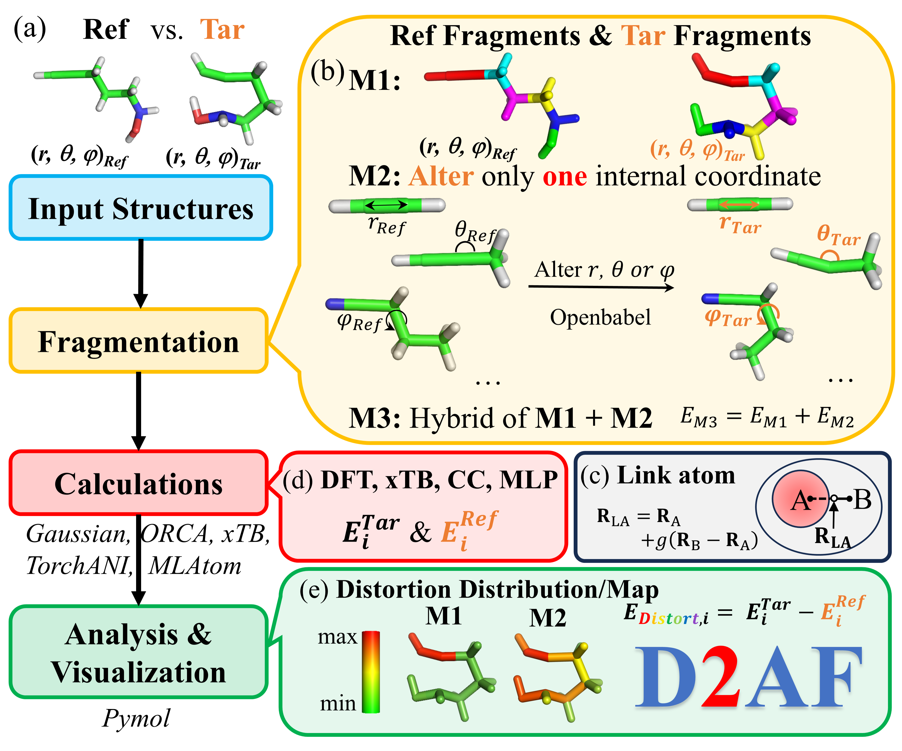
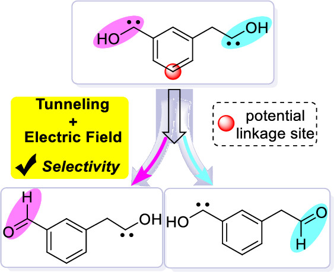
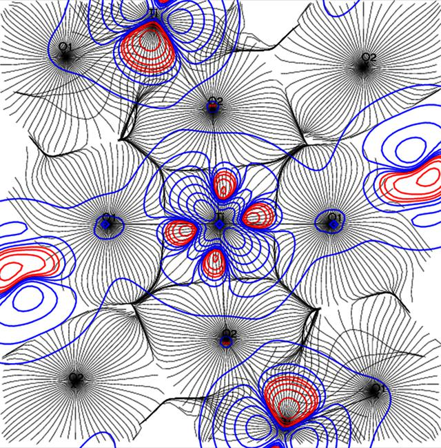
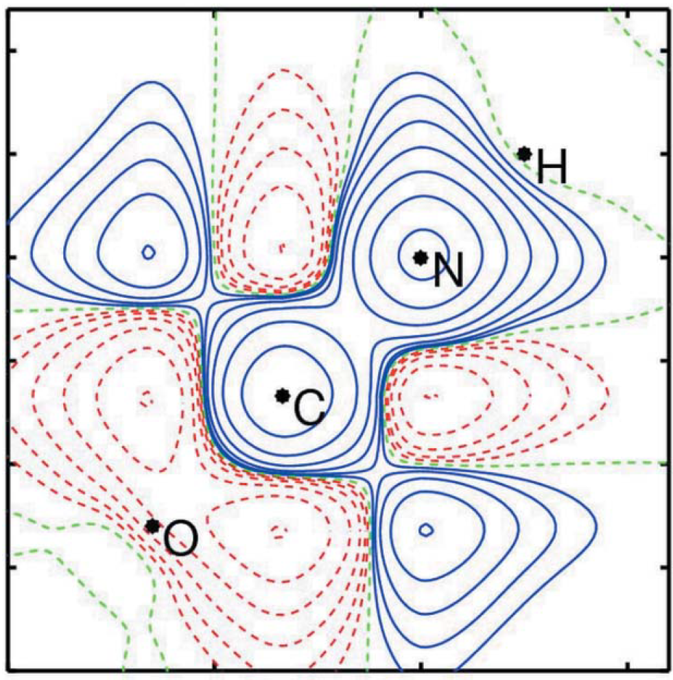
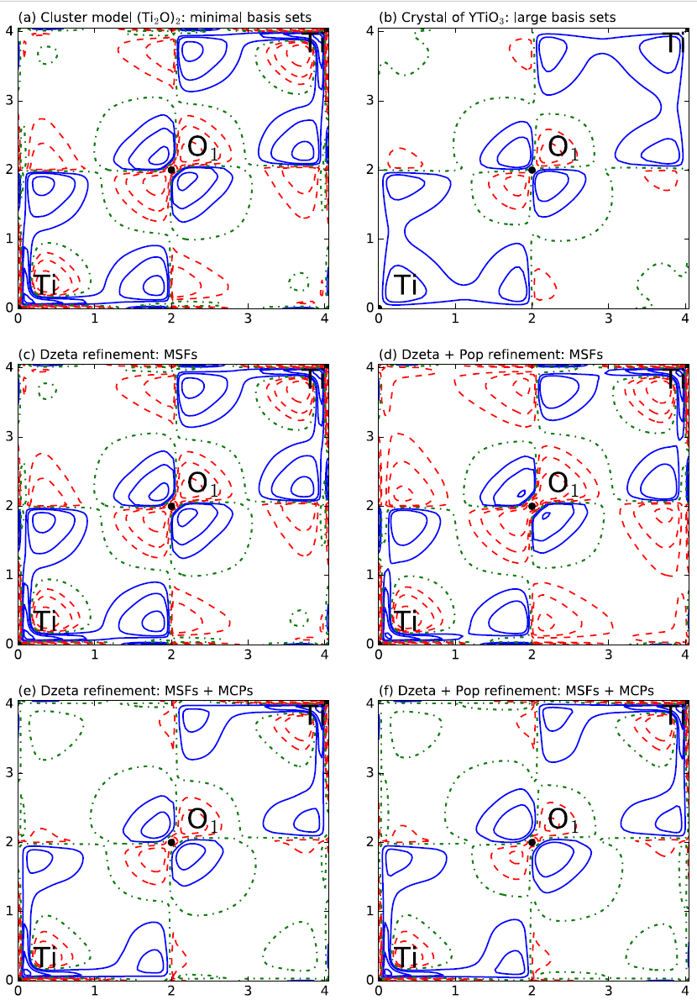
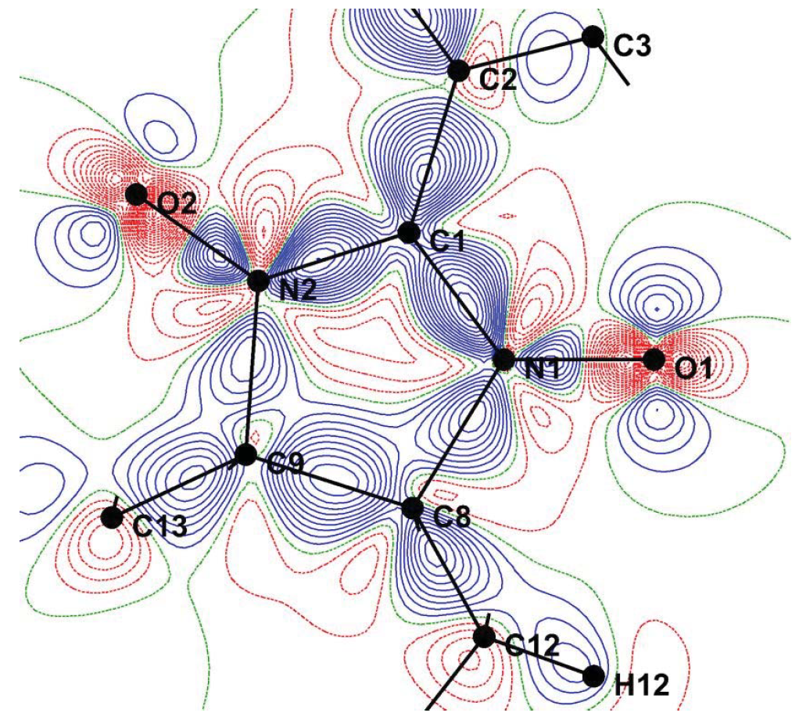
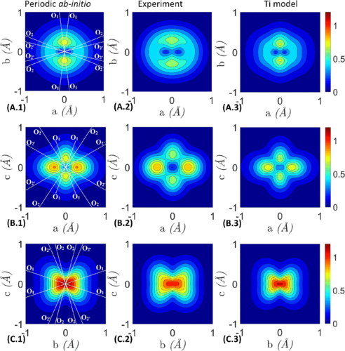
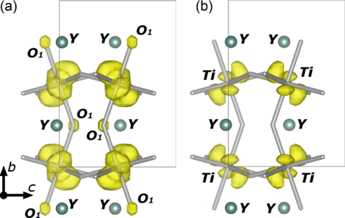
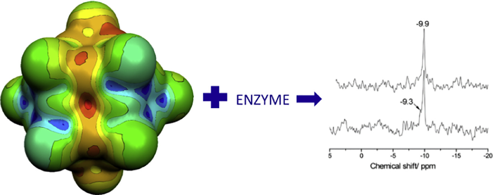

Publications
12 peer-reviewed papers, 4 as first author. Every entry is generated from a single BibTeX file, so the citation data here matches the record of the journal.
Bold marks my name. ‡ indicates joint first authorship.
2025
-
Chem. Sci. 2025, 16(5), 2351-2362
A fragmentation-based scheme that decomposes distortion energy down to individual atoms, turning the distortion/interaction model into an atom-resolved distortion map. The resulting local-distortion indices are designed to serve as descriptors for regression and machine-learning models.
Graphical abstract

2024
-
Nat. Commun. 2024, 15(1), 4181
Machine learning replaces the expensive quantum-mechanical step inside multiscale quantum refinement, making reliable refinement of protein-drug complexes tractable at a fraction of the cost.
Graphical abstract


2023
-
Quantum Tunneling in Reactions Modulated by External Electric Fields: Reactivity and Selectivity
J. Phys. Chem. Lett. 2023, 14(5), 1124-1132
‡ joint first authors
External electric fields are shown to steer heavy-atom quantum tunnelling, offering a handle on both reactivity and selectivity that classical transition-state pictures miss.
Graphical abstract

2022
-
Commun. Chem. 2022, 5(1), 159
Computational analysis of an unsupported Ir-Ir bonded diiridium(II) system, linking electronic structure to the observed photophysical behaviour.
2021
-
Multiscale Quantum Refinement Approaches for Metalloproteins
J. Chem. Theory Comput. 2021, 17(6), 3783-3796
Systematic assessment of QM/MM-based quantum refinement for metalloproteins, establishing which protocols recover chemically sensible metal-site geometries from X-ray data.
Graphical abstract


2019
-
IUCrJ 2019, 6(5), 884-894
Joint X-ray and polarized-neutron analysis resolves the spin-split electron density of ferromagnetic YTiO3 and exposes a direct signature of orbital ordering.
Graphical abstract

2018
-
Acta Cryst. A 2018, 74(2), 131-142
Methodological framework for reconstructing the one-electron reduced density matrix by jointly refining complementary experimental data sets.
Graphical abstract

-
J. Chem. Phys. 2018, 148(16), 164106
Combines magnetic structure factors with magnetic Compton profiles to reconstruct the spin-resolved one-electron reduced density matrix, tying together position- and momentum-space observables.
Graphical abstract

2017
-
Acta Cryst. B 2017, 73(4), 544-549
Experiment pushes back on theory: the measured spin-resolved density of an organic radical disagrees with high-level calculations, a useful reminder for anyone benchmarking methods.
Graphical abstract

-
Phys. Rev. B 2017, 96(5), 054427
Part II: the companion momentum-space picture, showing that position- and momentum-space spin densities tell a mutually consistent story.
Graphical abstract

-
Phys. Rev. B 2017, 96(5), 054426
Part I: position-space spin density of YTiO3 from a joint refinement of polarized neutron and magnetic X-ray diffraction data.
Graphical abstract

-
J. Inorg. Biochem. 2017, 176, 90-99
NMR, ab initio calculations and crystallography together explain how a polyoxometalate inhibits Na+/K+-ATPase - an early bridge from my methods work to biological targets.
Graphical abstract
